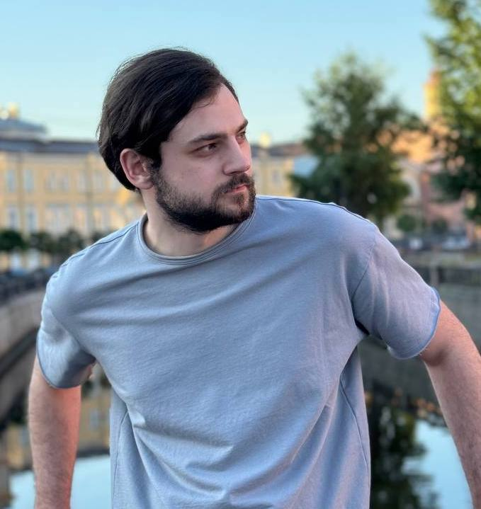
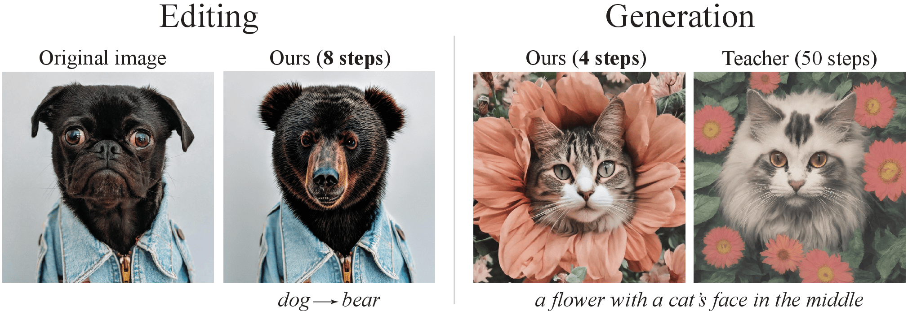
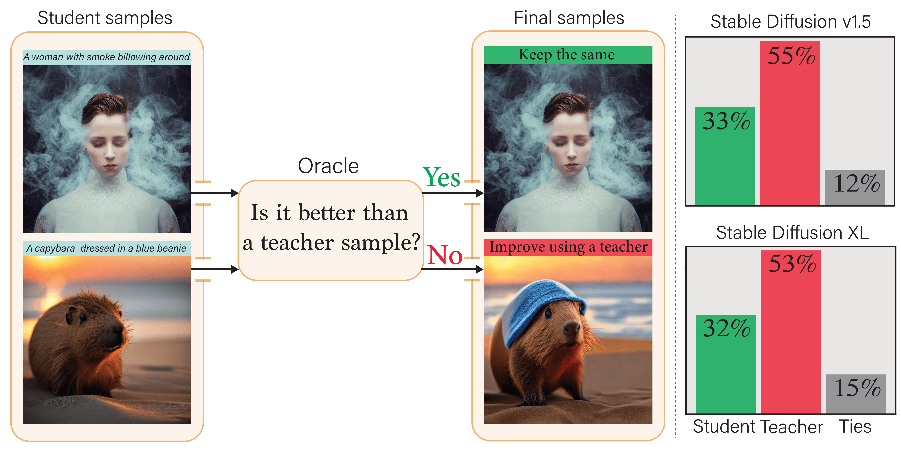
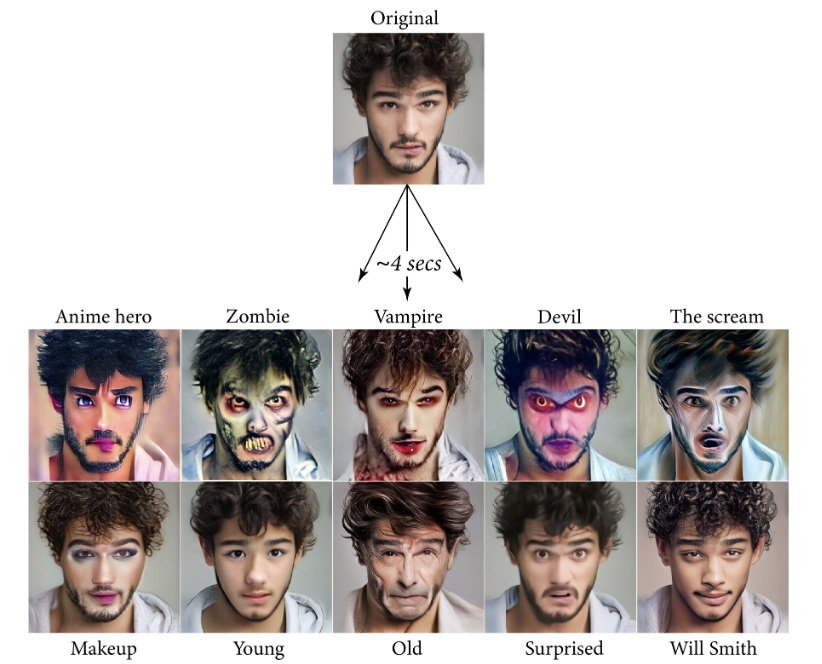
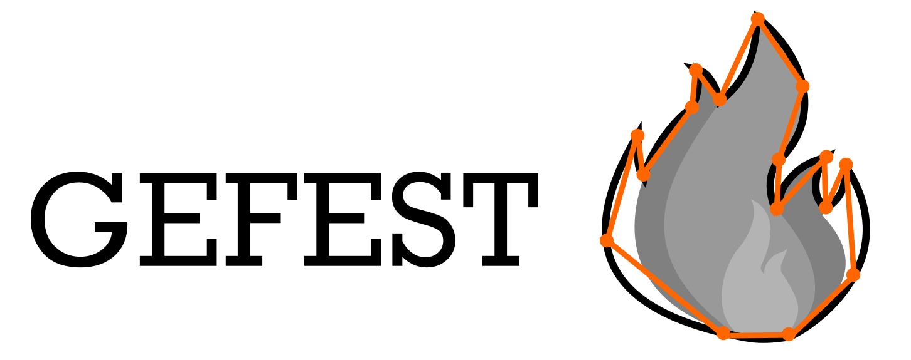
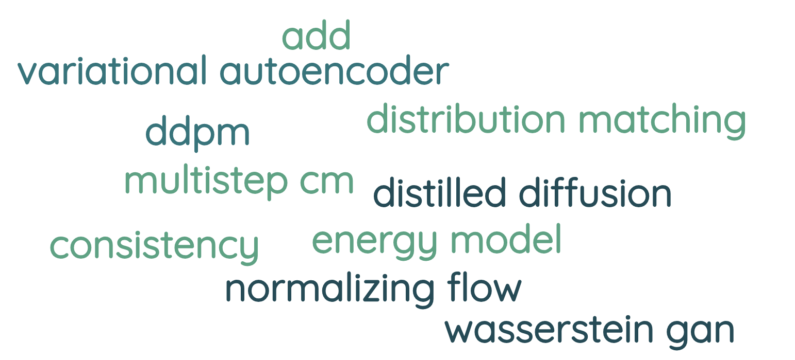

|
Nikita Starodubcev I am a first-year PhD student at Yandex Research, HSE University, under the supervision of Artem Babenko. My research focuses on distilled diffusion models and their application in image editing and generation. Before that, I worked at ITMO developing open-source software frameworks. My main goal is to enhance generative models in order to ensure their greater efficacy in real-world applications. I am always open to new collaborations and highly motivated to work on cutting-edge research projects. |
 Chaising the unattainable... |
{kind=link}
Research projects |
|  |
Invertible Consistency Distillation for Text-Guided Image Editing in Around 7 Steps arXiv Nikita Starodubcev, Mikhail Khoroshikh, Artem Babenko, Dmitry Baranchuk We consider Consistency Distillation from the perspective of inversion, unlocking its potential for applications such as text-guided image editing. |
|
 |
Your Student is Better Than Expected: Adaptive Teacher-Student Collaboration for Text-Conditional Diffusion Models CVPR 2024 Nikita Starodubcev, Artem Fedorov, Artem Babenko, Dmitry Baranchuk We show that a distilled model can sometimes outperform its teacher, despite being trained to approximate it. Based on the insights, we propose an adaptive teacher-student collaboration approach for image generation and text-guided editing. |
|  |
Towards Real-time Text-driven Image Manipulation with Unconditional Diffusion Models arXiv Nikita Starodubcev, Dmitry Baranchuk Valentin Khrulkov, Artem Babenko, We propose an efficient fine-tuning based approach for domain adaptation of unconditional diffusion models, which works in about 4 seconds and requires 10 GiB of memory. Our method can compete with heavyweight text-conditional diffusion models on human faces editing. |
|  |
Generative design of physical objects using modular framework EAAI 2023 Nikita Starodubcev, Nikolay N., Elizaveta A., Konstantin G., Denis S., Anna K., This work proposes an open-source framework aimed at generating novel engineering objects with unique properties. For example, we investigate the optimization of hydrodynamic red blood cell traps needed for disease diagnosis. |
Toy projects |

|
Fast InstructPix2Pix using Distilled Text-conditional Diffusion Models In this project, the acceleration of the IntructPix2Pix model is achieved using the distilled diffusion models: Latent Consistency Models and Adversarial Diffusion Distillation. The IntructPix2Pix adapts through simple weight geometry. This allows us to speed up editing by about 4 times without noticeable quality degradation. |
|  |
Journey through generative modeling In this work, I dive into the theory of recent works on generative models in order to gain a complete understanding. The goal is to identify further research directions and answer interesting questions that have not been covered in the papers. |